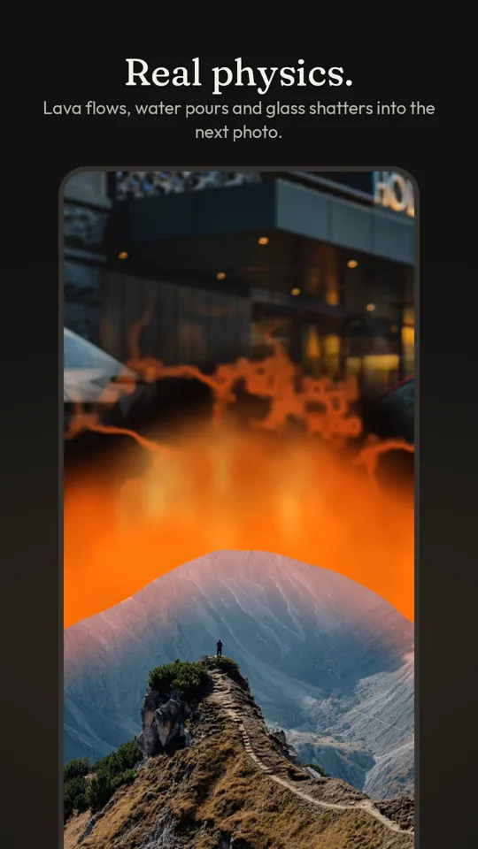
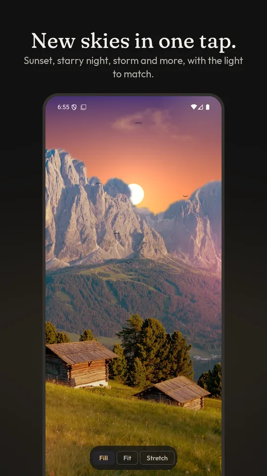

I tuoi video e foto come sfondo animato per Android.
Scegli un video, una GIF o una foto dal telefono e guardala ripetersi sulla schermata Home. Crea una playlist e lo sfondo cambia da solo, con 123 transizioni tra uno e l’altro.
Scaricalo gratis su Google PlayNiente pubblicità. Niente account. I tuoi file non lasciano mai il telefono.

Le nostre app
LoopPaper
I tuoi video, GIF e foto come sfondo animato, con 123 transizioni.
Scaricalo gratis su Google PlayLoopPaper Studio
Dai vita a una foto: cieli in movimento, acqua che scorre, aure e altro.
LoopPaper Studio ↓Loopy
Un morbido animaletto di gelatina che vive sulla tua schermata Home. Vestilo e insegnagli trucchi.
Loopy ↓Guardalo in movimento
123 transizioni tra le tue immagini




Cosa fa
Sfondo video
Qualsiasi video o GIF del telefono, di qualsiasi durata. Guarda il loop prima di impostarlo, taglialo e scegli da dove parte.
Cambia sfondo
Playlist di video, GIF e foto che cambiano da sole, con una riproduzione casuale che non si ripete mai.
123 transizioni
Acqua, lava, vetro, sabbia, buco nero, anime, fumetto, retrò e altro, con fisica reale.
Foto che prendono vita
La persona o l’animale nella foto respira, sbatte le palpebre e si sporge verso il tuo dito.
LoopPaper Studio
Dai vita alle tue foto: cieli in movimento, acqua che scorre, finestre che si accendono di notte, aure, effetti anime e cinemagraph. 3 gratis.
La tua foto come tessuto
Uno stendardo, una bandiera, un arazzo o un gagliardetto che oscilla quando inclini il telefono, o un sipario che si apre allo sblocco. Scegli seta, velluto o tela, e il vento dalla calma alla tempesta.
Un orologio dietro il soggetto
Stili di orologio da top di gamma, intorno o dietro la persona nella foto.
Fatto per i pieghevoli
Una playlist diversa sullo schermo interno e su quello esterno, modalità libro e da tavolo.
Leggero sulla batteria
Si riposa quando lo schermo è spento e può fermarsi con il risparmio energetico.
Privato
Niente pubblicità, niente account, nessun tracciamento. Le tue foto restano sul telefono.
LoopPaper Studio: dai vita alle tue foto
Fai muovere il cielo, scorrere l’acqua e cadere la neve in qualsiasi foto, aggiungi aure e occhi luminosi, sostituisci il cielo con un tramonto o una notte stellata e impostala come sfondo animato o condividila come video. L’IA gira sul telefono, offline. 3 gratis; Pro è un acquisto unico, senza abbonamento.




In test su Google Play. Entra nel gruppo dei tester, poi: Diventa tester
Loopy: un animaletto di gelatina per la tua schermata Home
Loopy è un piccolo amico di gelatina con una vera fisica dei corpi morbidi. Si schiaccia, trema, si infila tra le icone e scivola quando inclini il telefono. Dagli un premio al giorno e impara trucchi, gioca ad Acchiappa premi e vestilo con colori, forme, facce e cappelli.


In test su Google Play. Entra nel gruppo dei tester, poi: Diventa tester
Domande
Come imposto un video come sfondo su Android?
Installa LoopPaper, tocca Scegli, seleziona un video o una GIF dal telefono, guarda il loop nell’anteprima e tocca Imposta sfondo. Puoi anche toccare Condividi su un video in Galleria o Google Foto e scegliere LoopPaper.
LoopPaper è gratis?
Sì. Impostare un video, una GIF o una foto come sfondo animato è gratis, senza pubblicità, senza filigrana e senza account. LoopPaper Plus è un acquisto unico facoltativo che sblocca playlist illimitate, tutte le 123 transizioni e gli effetti extra. La prova di 7 giorni parte solo quando tocchi Inizia la prova e non diventa mai un abbonamento.
Lo sfondo può cambiare da solo?
Sì. Crea una playlist di video, GIF e foto e LoopPaper passa dall’uno all’altro da solo, con una transizione tra ciascuno.
Uno sfondo animato consuma la batteria?
LoopPaper si riposa quando lo schermo è spento e può fermarsi con il risparmio energetico, quindi lavora solo mentre lo guardi.
Le mie foto vengono caricate da qualche parte?
No. I tuoi file restano sul telefono. LoopPaper non li carica mai e tutto ciò che fa su una foto avviene sul telefono.